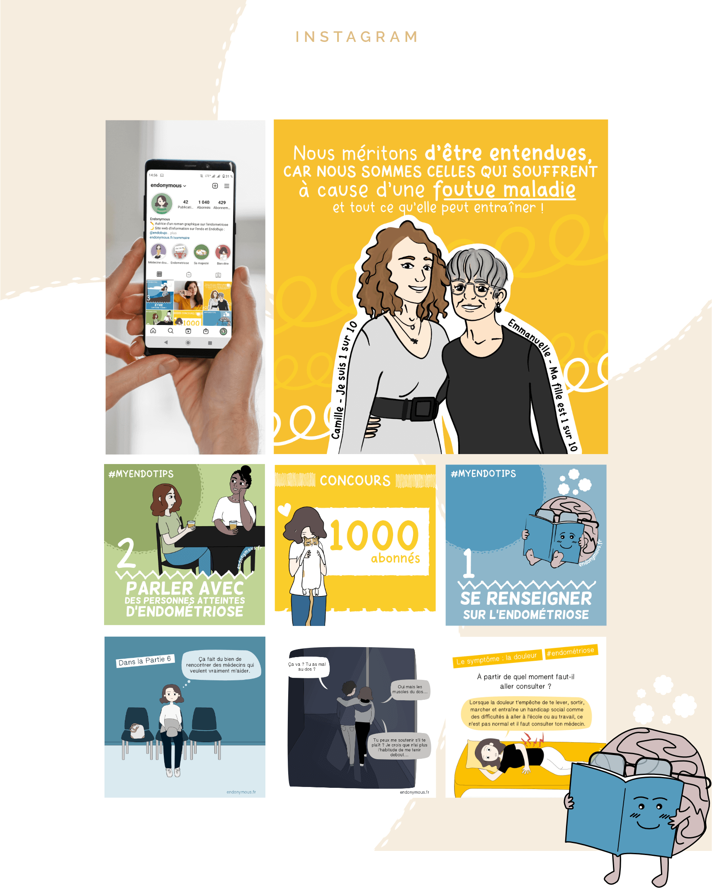

Endonymous
Site web, illustrations et Réseaux sociaux

Le projet
Endonymous est un blog créé pour diffuser un roman graphique que j'ai réalisé sur l'endométriose et mon parcours avec cette maladie chronique touchant une femme sur dix.
Le blog recense plusieurs articles sur l'endométriose permettant d'améliorer les connaissances sur cette maladie ainsi que des planches de bande-dessinée, le tout est accessible de manière gratuite.

Choix graphiques
Je devais créer un blog agréable et lisible pour ces deux types de contenus (écrit et imagé).
Après de nombreuses recherches, j'ai remarqué que la majeur partie des blogs BD créés l'étaient avec des plateformes qui rendait la lecture du contenu dessiné peu agréable, notamment puisque la plupart des articles étaient classés par date. Pour ce projet, je voulais faciliter l'expérience utilisateur et permettre à ces derniers de trouver facilement les parties du roman graphique qu'ils voulaient lire.
Le site se veut à l'image du roman graphique, drôle mais sérieux, dédramitisant mais permettant de sensibiliser à la maladie. Il s'agit d'un outil ludique pour parler d'un sujet grave voir douloureux mais toujours avec une pointe d'humour et d'autodérision.
Communauté
Endonymous est également une communauté Facebook, Twitter et Instagram de plus de 2000 abonnés, avec des contenus et des illustrations créés régulièrement pour faire vivre ces réseaux sociaux.
